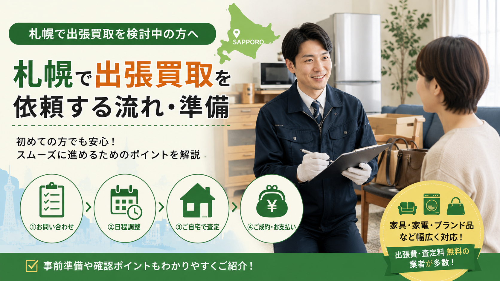

PICKUP FLOW / SAPPORO
札幌で家具・家電・ブランド品などを売りたいけれど、初めての出張買取で何を準備すればよいか分からない方向けの実用ガイド。申込から査定・搬出までの基本的な流れと、事前に整えておきたい品物情報・写真・付属品・搬出経路・冬季のスケジュール・マンション規約・本人確認書類まで、当日スムーズに進めるためのチェックポイントをまとめました。

札幌で家具・家電・ブランド品・不用品などを整理したいとき、店舗まで持ち込まずに自宅まで査定に来てもらえる「出張買取」は便利な方法です。
特に札幌市内では、マンション住まい、戸建ての片付け、引っ越し、実家整理、遺品整理などで大型の家具や家電を処分したいケースも多く、出張買取を上手に活用することで、手間を減らしながら不用品を現金化できる可能性があります。
ただし、何でも必ず買い取ってもらえるわけではありません。状態、年式、需要、搬出条件によって査定額が変わるため、事前準備をしておくことが大切です。
札幌で出張買取を依頼する流れは、一般的に次のようになります。
出張買取は、査定から搬出まで自宅で完結できる点が大きなメリットです。特に冷蔵庫、洗濯機、食器棚、ソファ、ベッド、テレビ台など、持ち運びが難しい品物を売りたいときに向いています。
出張買取を依頼する前に、まずは売りたい品物を整理しましょう。たとえば、次のような形でリスト化しておくと問い合わせがスムーズです。
品物が多い場合は、部屋ごとに「リビング」「キッチン」「寝室」「物置」などに分けて整理すると分かりやすくなります。
札幌では、引っ越しや実家整理のタイミングでまとめて依頼するケースも多いため、1点だけでなく複数点をまとめて査定してもらう方が効率的です。
買取価格は、品物の状態によって大きく変わります。査定前に次の点を確認しておきましょう。
家電は型番が重要：特に家電の場合、メーカー名、型番、製造年は重要です。冷蔵庫や洗濯機、テレビなどは、本体の側面や背面に型番シールが貼られていることが多いので、事前に確認しておくと問い合わせ時に役立ちます。
出張買取を依頼する際は、品物の写真を送れるようにしておくとスムーズです。撮影しておきたい写真は次の通りです。
写真があると、業者側も事前に買取可否やおおよその査定額を判断しやすくなります。特に大型家具や大型家電の場合、事前写真があることで当日のトラブルを減らしやすくなります。
問い合わせ時には、次の情報をできるだけ具体的に伝えましょう。
札幌市内でも、中央区、北区、東区、白石区、豊平区、西区、厚別区、手稲区、清田区、南区など、エリアによって移動時間や対応可能日が変わることがあります。
特に冬季は雪の影響で移動や搬出に時間がかかる場合もあるため、日程には余裕を持って依頼するのがおすすめです。
札幌で出張買取を依頼する際、大型家具や大型家電の場合は搬出経路の確認が重要です。たとえば、次のような点を事前に確認しておきましょう。
大型冷蔵庫、ドラム式洗濯機、大型ソファ、食器棚、ベッドフレームなどは、搬出が難しいと追加作業が必要になる場合があります。事前に搬出条件を伝えておくことで、当日の作業がスムーズになります。
品物は、できる範囲で掃除しておきましょう。特に次のような品物は、見た目の印象が査定に影響しやすいです。
完璧に清掃する必要はありませんが、ホコリ、汚れ、食品カス、シール跡などを落としておくと印象が良くなります。
冷蔵庫は中身を空にし、洗濯機は水抜きをしておくと、査定後の搬出もスムーズです。
付属品がそろっていると、査定額が上がりやすくなります。たとえば、次のようなものがあれば一緒に用意しておきましょう。
特にブランド品、時計、カメラ、オーディオ機器、楽器などは、付属品の有無で評価が変わりやすいです。
出張買取では、すべての品物が買取対象になるわけではありません。一般的に、次のようなものは買取が難しい場合があります。
ただし、業者によって判断基準は異なります。自分で「これは売れないだろう」と決めつけず、写真を送って確認してみるのがおすすめです。
出張買取を依頼する前に、費用の有無は必ず確認しましょう。確認したいポイントは次の通りです。
注意：「無料査定」と書かれていても、条件によって費用が発生するケースがあります。特に大型品や大量整理の場合は、事前に料金条件を確認しておくと安心です。
高く売りたい場合は、複数の買取業者に相談するのも有効です。同じ品物でも、業者によって得意分野や販売ルートが異なるため、査定額に差が出ることがあります。
たとえば、次のように得意分野が分かれることがあります。
札幌でまとめて不用品を整理する場合は、1社だけでなく、複数社に相談して比較することで、より納得しやすい買取につながります。
札幌で出張買取を依頼する場合、冬季のスケジュールには注意が必要です。雪や路面凍結の影響で、訪問時間が前後したり、大型品の搬出に時間がかかったりする場合があります。
特に次のような時期は、早めの予約がおすすめです。
急ぎで処分したい場合でも、希望日に必ず来てもらえるとは限りません。余裕を持って依頼しておくと安心です。
札幌市内のマンションで出張買取を依頼する場合は、搬出時のルールを確認しておきましょう。確認したい内容は次の通りです。
大型家具や家電を搬出する場合、マンションによっては事前申請が必要なこともあります。トラブルを避けるため、管理会社や管理人に確認しておくと安心です。
出張買取の当日までに、次の準備をしておきましょう。
古物営業法に基づき、買取時には本人確認が必要になります。運転免許証、マイナンバーカード、健康保険証など、本人確認書類を準備しておきましょう。
出張査定を受けたからといって、必ず売らなければならないわけではありません。査定金額に納得できない場合は、無理に売却せず、いったん断ることもできます。
ただし、キャンセル料の有無は事前に確認しておきましょう。無料査定・無料キャンセルの業者であれば、比較検討しやすくなります。
出張買取と不用品回収は似ていますが、目的が異なります。
出張買取は、価値のある品物を買い取ってもらうサービスです。一方、不用品回収は、不要な物を処分するためのサービスです。
つまり、まだ使える家具・家電・ブランド品・貴金属・工具・楽器などは出張買取に向いていますが、壊れている物や需要が少ない物は買取ではなく処分になることがあります。
実家整理や引っ越しでは、買取できる物と処分が必要な物が混在することが多いため、まずは買取対象になりそうな物を査定してもらうのがおすすめです。
札幌で出張買取が向いているのは、次のようなケースです。
札幌では車があっても大型品の運搬は大変です。特に冬場は搬出や移動の負担が大きくなるため、自宅まで来てもらえる出張買取は便利な選択肢になります。
出張買取を依頼する前に、次の項目を確認しておきましょう。
この準備をしておくことで、問い合わせから査定、搬出までスムーズに進みやすくなります。
札幌で出張買取を依頼する際は、売りたい品物を整理し、状態や型番、付属品を確認しておくことが大切です。
特に大型家具・大型家電の場合は、品物そのものの価値だけでなく、搬出経路や駐車スペース、マンションのルールなども重要になります。
また、札幌は冬季の雪や道路状況の影響を受けやすいため、日程には余裕を持って依頼するのがおすすめです。
出張買取を上手に活用すれば、引っ越し、実家整理、遺品整理、不用品整理の負担を減らしながら、まだ使える品物を有効に活かすことができます。
家まるごと、しっかり高く。LINEで写真を送るだけで仮査定OK。
最短即日でお伺いします。査定無料・キャンセル料無料。